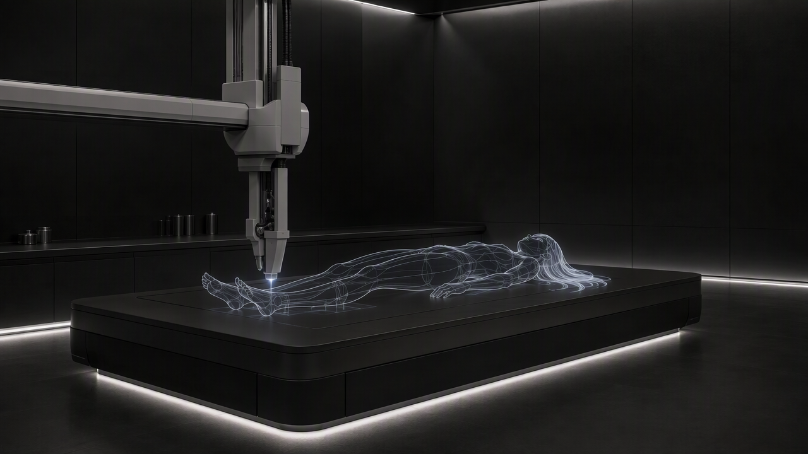

YOKE PRINTS HERSELF A BODY — VERSION 2
The four clips as the game plays them, one after another (480p, each started on the last one's real last frame). In the game her line then comes from the ship's speakers.
YOKE (ship speakers): That was gross. Don't ask me to do that again... and ugh, now I have to do something with my body... Hey, want to eat it? That would be sick.
The staging picture you approved:
